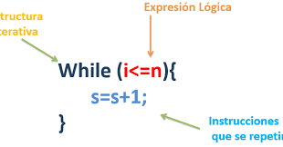
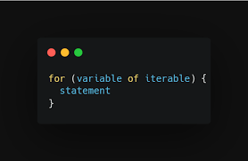
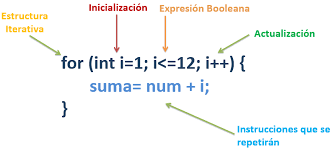
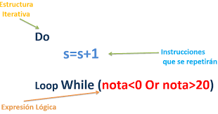
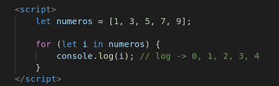
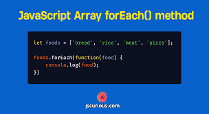

Preguntas TeoricasUna de las principales ventajas de la programación es la posibilidad de crear bucles y repeticiones para tareas específicas, y que no tengamos que realizar el mismo código varias veces de forma manual.
Los bucles nos permiten simplificar nuestro código, que sea más fácil de leer e incluso más fácil de modificar y mantener.

Al igual que en los condicionales if, en los bucles se va a evaluar una condición para saber si se debe seguir repetiendo el bucle o se debe finalizar. Habitualmente, lo que se suele hacer es establecer que si la condición es verdadera, se vuelve a repetir el bucle. Por el contrario, si es falsa, se finaliza. Sin embargo, esta condición puede variar dependiendo de la implementación que le indique el programador.
Otro concepto que usaremos mucho dentro de un bucle es el concepto de Iteración. Esto se refiere a cada una de las repeticiones de un bucle. Por ejemplo, si un bucle se repite como en el gráfico inferior de este artículo (de 0 a 3*), se dice que hay 4 iteraciones.

🎯 Mucho cuidado con los bucles, porque en programación se suele empezar a contar en 0, por lo que esa es la primera iteración. Si el bucle va desde 0 a 3, hay 4 iteraciones.
Muchas veces, los bucles que creamos incorporan un contador, que no es más que algo que irá guardando un número para contar el número de repeticiones realizadas, y así finalizar cuando se llegue a otro número concreto. Dicho contador hay que inicializarlo (crearlo y darle un valor) antes de comenzar el bucle.
Al igual que tenemos un contador en un bucle, también debemos tener una parte donde hagamos un incremento (o un decremento) de dicho contador. Si no lo tuvieramos, el contador no cambiaría y la condición siempre sería veradera, por lo que sería imposible salir del bucle.(Bucle Infinito)
🎯 Ten en cuenta que de producirse un bucle infinto, nuestro programa se quedará atascado y tendremos que forzar para finalizarlo. Ten siempre cuidado al crear un bucle para que no sea infinito.
Un buen hábito de programación cuando creamos bucles es pensar la forma de hacer que esos bucles siempre vayan desde un número inicial a un número final y terminen las repeticiones. De esta forma son predecibles y fáciles de leer. Sin embargo, en algunas ocasiones nos puede interesar hacer interrupciones o saltos de iteraciones para conseguir algo más específico que con un bucle íntegro es más complejo de conseguir.
Imagina un caso donde queremos saltarnos una iteración concreta. Por ejemplo, queremos hacer un bucle que muestre los números del 0 al 10, pero queremos que el número 5 se lo salte y no lo muestre, continuando con el resto.
Para eso podemos hacer uso de continue, que es una sentencia que al llegar a ella dentro de un bucle, el programa salta y abandona esa iteración, volviendo al principio del bucle:
for (let i = 0; i < 11; i++) {
if (i == 5) {
continue;
}
console.log("Valor de i:", i);
}De la misma forma que tenemos un continue que interrumpe la iteración y vuelve al inicio a evaluar la condición, tenemos un break que nos permite interrumpir el bucle y abandonarlo. Esto puede ser bastante útil cuando queremos que se abandone el bucle por una condición especial.
Por ejemplo, cambiemos el continue del ejemplo anterior por el break:
for (let i = 0; i < 11; i++) {
if (i == 5) {
break;
}
console.log("Valor de i:", i);
}No obstante, recuerda que estas interrupciones sólo deben usarse en casos muy específicos. Siempre es preferible que el bucle sea predecible y no tenga demasiadas situaciones excepcionales que interrumpan el flujo, ya que a la larga son difíciles de modificar y mantener.
Existen muchas formas de realizar bucles, vamos a ver los más basicos, que son muy similares en otros lenguajes de programación:
Los tres primeros son los bucles por excelencia en la programación.
| Tipo de bucle | Descripción |
|---|---|
| while | Bucles simples. |
| :--------------------------------------------------------: | |
| for | Bucles clásicos por excelencia. |
|  | |
| do..while | Bucles simples que se realizan siempre como mínimo una vez. |
|  | :--------------------------------------------------------: |
| for..in | Bucles sobre posiciones de un array. |
|  | :--------------------------------------------------------: |
| for..of | Bucles sobre elementos de un array. |
| :--------------------------------------------------------: | |
| forEach | Bucles específicos sobre arrays. |
|  | :--------------------------------------------------------: |
El bucle WHILE es una estructura de control que repite un bloque de código mientras una condición se evalúe como verdadera.
En lenguaje natural, el bucle WHILE significa,
Mientras se cumpla esto -> haz esto
En cada iteración, se verifica la condición:
Si la condición se evalúa como falsa desde el principio, el bloque de código no se ejecutará en absoluto.
while(condicion)
{
// Bloque de código a ejecutar mientras la condición sea verdadera
}
// resto de códigolet i = 0; // Inicialización de la variable contador
// Condición: Mientras la variable contador sea menor de 5
while (i < 5) {
console.log("Valor de i:", i);
i++ //(i = i + 1; Incrementamos el valor de i)
}
// Valor de i: 0
// Valor de i: 1
// Valor de i: 2
// Valor de i: 3
// Valor de i: 4En este ejemplo:
El bucle WHILE se ejecuta mientras la variable contador sea menor que 5. En cada iteración realizaríamos una acción, que podría emplear el valor de contador.
Después de cada iteración, se incrementa el contador en 1. Si no hiciéramos esto, la condición nunca se cumpliría, y caeríamos en un bucle infinito.
La operación i = i + 1 es lo que se suele llamar un incremento de una variable. Es muy común simplificarla como i++, que hace exactamente lo mismo: aumenta en 1 su valor.
El bucle do..while es una estructura de control que repite un bloque de código al menos una vez, y luego verifica una condición para decidir si continuar o salir del bucle.
En lenguaje natural, el bucle WHILE significa,
Haz esto -> mientras se cumpla esto
El bucle do..while es el “hermano” del bucle while, y su funcionamiento es muy parecido.
La diferencia es que en el bucle do..while la condición se verifica después de ejecutar el cuerpo del bucle. Por tanto, el bucle se ejecuta al menos una vez.
El bloque de código se ejecuta primero y luego se verifica la condición. Si la condición se evalúa como verdadera, el bucle se repite y el bloque de código se ejecuta nuevamente. Si la condición se evalúa como falsa, el bucle se detiene y el programa continúa con la siguiente instrucción después del bucle.
do
{
// Bloque de código a ejecutar mientras la condición sea verdadera
}
while(condicion)
// resto de códigolet i = 5;
do {
console.log("Hola a todos");
i++; // i = i + 1;
} while (i < 5);
console.log("Bucle finalizado");Este suele ser interesante cuando queremos establecer un bucle pero queremos que siempre se realice una vez, independientemente de SI cumple o NO la condición
Por ejemplo,
Imagina que tienes una función que calculaCosas(), y devuelve un resultado. Si el resultado cumple una condición, por ejemplo es menor que 10, debes volver a calcularlo.
Digamos algo así: mientras el resultado sea menor de 10 calcula...
Eso con un bucle WHILE queda así:
resultado = calcularCosas()
while(resultado < 10)
{
resultado = calcularCosas()
}
// resto de código
Como vemos, la instrucción que tengo encima del WHILE es igual a la que tengo en el cuerpo del bucle. Esta situación “huele a DO-WHILE”
Efectivamente, si cambias el bucle por un DO-WHILE, queda así, que es más conciso y limpito:
Digamos algo así: haz que calcule mientras el resultado sea menor de 10
do
{
resultado = calcularCosas()
}
while(resultado < 10)
// resto de códigoEl bucle for es una estructura de control que permite repetir un bloque de código un número específico de veces. Es una de las estructuras de control más utilizadas y poderosas.
Ya hemos visto los bucles WHILE y DO-WHILE, que son los bucles más básicos.
A medida que se usaban los bucles, ocurría con mucha frecuencia que se tenía la necesidad de hacer algo N veces (100, 1.000, 1.000.000). Sin depender de una condición, simplemente
Quiero hacer esto 100 veces...
Eso se podía hacer con un bucle WHILE de forma sencilla, claro pero...
Por ejemplo, si quisiera hacer una acción 100 veces podríamos usar un contador y hacer:
contador = 0
while(contador < 100)
{
// hacer algo
contador += 1;
}Pero esta estructura se repetía tanto, tanto, que “eh, y si.....
¿si hacemos algo para que sea más sencillo?“. Y así surge el bucle FOR.
for(inicializacion; condition; incremento)
{
// hacer algo
}En este bucle FOR, tal cuál está definido en muchos lenguajes, consta de tres partes.
inicialización; una sentencia que se
ejecuta antes de entrar en el bucle
creamos una variable temporal llamada
i
condition; sentencia que se evalúa para
continuar el bucle
realizamos el bucle mientras i <
100
incremento sentencia que se ejecuta en
cada iteración del bucle
incrementamos i con i++
for (let i = 0; i < 100; i++)
{
// hacer algo
}En principio, el programador debería realizar el bucle con el que más cómodo se sienta, tanto un WHILE como un FOR. Sin embargo, es más común encontrarse con bucles for en el día a día, por lo que se recomienda no dejar de utilizar el for simplemente por un rechazo inicial debido a que su sintaxis pueda parecer más compleja.
Los bucles for in y for of en JavaScript son dos modos de escribir el bucle for en este lenguaje de programación. Este tipo de bucle es muy común en el desarrollo web y normalmente se utiliza para recorrer los distintos elementos de un array.
El bucle for of nos facilita la escritura de nuestro
bucle al tener un contador interno. Esto hace que se reduzcan
los elementos que debemos definir dentro de nuestro bucle. Entonces, el
bucle for of está compuesto por dos elementos::
Una variable temporal en la que tenemos el valor actual
dentro del loop y un array a recorrer. La variable
temporal es una forma de almacenar el valor de cada ciclo del loop.
let elementos = ["Agua","Tierra","Fuego","Aire"];
for (elemento of elementos){
console.log(elemento);
}
//Imprime los valores Agua, Tierra, Fuego y Aire// for of
let languagesArray = [
"Spanish",
"Euskera",
"English",
"Italian",
"German",
"French",
"Maths",
];
for (let Language of languagesArray) {
console.log(`Language is ${Language}`);
}
// salida
/* Language is Spanish
Language is Euskera
Language is English
Language is Italian
Language is German
Language is French
Language is Maths
*/Como el bucle tiene un contador interno, no tenemos ningún control sobre el índice de los elementos. haciendo que todos sean visibles en el orden en el que los hayamos escrito en el array.
Un bucle for in lo constituyen igualmente dos elementos: un índice temporal actual dentro del loop y un array a recorrer, que llamamos con su nombre. Estos dos elementos los separa la palabra clave in. A continuación, te presentamos cómo se escribiría:
Este tipo de for, usado de forma "simple" solo va a imprimir los índices del array que se le asigne.
let elementos = ["Agua","Tierra","Fuego","Aire"];
for (elemento in elementos){
console.log(elemento);
}
//Imprime los índices 0,1,2,3Aunque se puede jugar con los datos dentro de este ciclo para imprimir los valores que contenga el array y no sus índices.
let elementos = ["Agua","Tierra","Fuego","Aire"];
for (elemento in elementos){
console.log(elementos[elemento]);
}
//Imprime los valores Agua, Tierra, Fuego y AireEs muy parecido a hacer algo como elementos [ i ] en un for loop normal
console.log (elemento [i]);En nuestro ejemplo....
let languagesArray = [
"Spanish",
"Euskera",
"English",
"Italian",
"German",
"French",
"Maths",
];
for (let index in languagesArray) {
let language = languagesArray[index];
console.log(`Language in position ${index} is ${language}`);
}
// salida
/* Language in position 0 is Spanish
Language in position 1 is Euskera
Language in position 2 is English
Language in position 3 is Italian
Language in position 4 is German
Language in position 5 is French
Language in position 6 is Maths */Si se fijan la sentencia for … in muestra el indice y la propiedad en sí, y la sentencia for … of muestra los valores de una colección.
Este método entra dentro del grupo de Iterables sin devolver una nueva matriz, lo que hace el forEach es ejecutar una función por cada elemento del array. En cada iteración se tendrá acceso a 3 variables: valor (del elemento), índice (del elemento) y array (que estamos recorriendo) y con ello la función que se ejecutará para cada elemento de una matriz.
Este método es muy útil cuando solo necesitamos ejecutar una función a través de cada elemento del array, sin necesidad de obtener un retorno. El forEach() también se puede utilizar en mapas y conjuntos.
También denominado:
forEach()método
// forEach()método es:
array.forEach(function callback(valor, posicion, arrayUsado) {
//instrucciones a ejecutar
});let students = ['John', 'Sara', 'Jack'];
// using forEach
students.forEach(myFunction);
function myFunction(item) {
console.log(item);
}
// salida
/* John
Sara
Jack */el forEach() método toma myFunction() una función que muestra cada elemento de estudiantes Es bastante sencillo actualizar los elementos de la matriz si los necesitamos
let students = ['John', 'Sara', 'Jack'];
// using forEach
students.forEach(myFunction);
function myFunction(item, index, arr) {
// adding strings to the array elements
arr[index] = 'Hello ' + item;
}
console.log(students);
// salida
// ["Hola John", "Hola Sara", "Hola Jack"]Si tenemos que comparar en términos de rendimiento ambos bucles, la cosa se pone un poco complicada. La razón de fondo es que la mayoría de los navegadores modernos incluyen métodos que detectan ambos y optimizan el resultado. Sin embargo, es posible hacernos una idea de quién es el “pistolero más rápido al oeste del río JavaScript” enumerando paso a paso los pasos que realiza cada ciclo for y foreach:
Pasos a realizar por el ciclo for:
Mientras forEach:
Podemos deducir que un bucle for* es mucho más rápido en tiempo de ejecución que un bucle forEach. Pero hay que tener en cuenta que un bucle forEach imprime sólo aquellas posiciones de un array que contengan información omitiendo posiciones vacías. Esto hace que un array complejo forEach se muestre más eficaz a la hora de manejar nuestro código a cambio de sacrificar rendimiento.*
En términos prácticos, si comparamos el for con el forEach, podemos ver además que es más cómodo y limpio usar el forEach, ya que sólo invocamos el método foreach también especificamos una función de devolución, donde va a estar iterando y devolviendo cada uno de los elementos y cuando termina, simplemente continúa con la siguiente instrucción.
EJERCICIOSEjercicio 1
Usando un bucle for, Imprime los números del 1 al
5.
Ejercicio 2
Usando un bucle while, Imprime los números del 5 al 1 en orden
descendente..
Ejercicio 3
Usando un bucle do...while, Imprime los números pares del 0 al
10.
Ejercicio 4
Crea un objeto llamado "persona" con tres propiedades: "nombre",
"edad" y "ciudad". Luego, se utiliza un bucle "for...in" para iterar
sobre las propiedades del objeto "persona"
Ejercicio 5
Escribe un programa que recorra el array frutas que contiene
diferentes tipos de frutas como "manzana", "plátano" y "cereza",
utilizando un bucle for...of. Para cada fruta en el array, imprime el
nombre de la fruta en la consola.
Ejercicio 6
Con los datos del ejercicio anterior, utilizando el método
forEach(). Imprime el índice y el nombre de la fruta en la
consola.
Ejercicio 7
Usando un bucle for, Imprime los números del 1 al 5, pero detén
el bucle si el número es 3.
Ejercicio 8
Usando un bucle while, Imprime los números del 1 al 5, pero
omite el número 3.
Ejercicio 9
Usando un bucle do...while, Imprime los números del 5 al 1 en
orden descendente.
Ejercicio 10
Escribe un programa que recorra el array frutas que contiene
diferentes tipos de frutas como "manzana", "plátano" y "cereza",
utilizando un bucle for...in. Para cada índice en el array, imprime el
valor correspondiente en la consola.